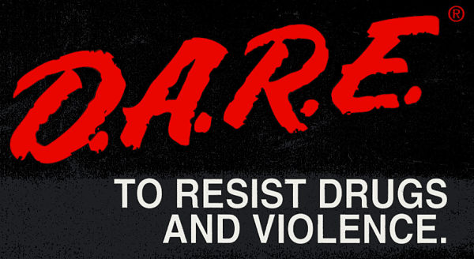

Accomplishments
D.A.R.E Program
Winning the DARE program in 5th grade was one of my earliest achievements that left a lasting impression on
me. The DARE (Drug Abuse Resistance Education) program aimed to educate students about the dangers of drug
use and the importance of making healthy choices. As I participated in engaging discussions, role-playing
scenarios, and thoughtful essays, I began to understand the impact of peer pressure and the value of
standing firm in my convictions. Winning the recognition for my efforts not only boosted my confidence, but
it also instilled in me a commitment to be a positive influence on my peers. That experience laid the
foundation for my future pursuits in leadership and community service.

Bootstrap
My journey in Bootstrap, an open-source framework, introduced me to the world of web development. I remember
feeling a mix of excitement and trepidation as I first explored the intricacies of responsive design and
user experience. As I learned how to leverage Bootstrap's extensive components and classes to create
dynamic, visually appealing websites, I discovered a passion for technology and design. This experience was
pivotal in enhancing my problem-solving skills and ignited a curiosity that has driven me to explore other
programming languages and tools. The ability to transform creative ideas into functional websites was not
just fulfilling but also a stepping stone in my tech journey.

Python
Python has been another integral part of my educational experience, providing me with a versatile programming
language that is widely used in various fields. Beginning with the basics of syntax and gradually diving
into more complex concepts like data structures and algorithms, I found Python to be incredibly
user-friendly and powerful. Throughout my learning journey, I tackled numerous projects, from simple
automation scripts to more sophisticated data analysis tasks. This hands-on experience not only solidified
my understanding of programming but also allowed me to appreciate the role of coding in solving real-world
problems. Python has become a tool that I continue to use and explore, further fueling my ambition to pursue
a career in technology.
NHSS Member
Being a member of the National Honor Society has been a significant milestone in my academic life. The NHS
recognizes students who demonstrate excellence in scholarship, leadership, character, and service, and being
inducted into this esteemed organization was both an honor and a responsibility. Throughout my time in NHS,
I engaged in numerous community service initiatives, collaborated with fellow members to organize events,
and honed my leadership skills. This experience taught me the importance of giving back to the community and
working collaboratively towards common goals. The values instilled in me during my NHS involvement continue
to shape my approach to both academics and extracurricular endeavors, motivating me to strive for excellence
while making a positive impact on those around me.